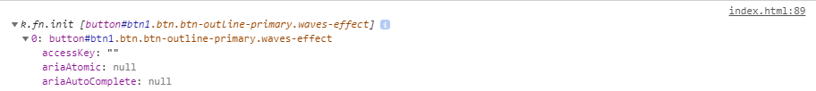

As you may remember from previous tutorials, we can listen on different events using JavaScript.
document.getElementById('btn1').addEventListener('click', myFunction);
Obviously jQuery also allows us to do it and makes it easier.
$('#btn1').on('click' , myFunction);
Which allows us to easily manipulate our DOM using events:
$('#btn1').on('click', myFunction);
function myFunction() {
$("#panel1").slideToggle(500);
}
We can also use nameless functions:
$('#btn1').on('click', function(){
$("#panel1").slideToggle(500);
});
We can use other events, like 'mouseover'
$('#btn1').on('mouseover', function(){
$("#panel1").slideToggle(500);
});
This way you can create your accordion component yourself
$('#btn1').on('click', function(){
$("#panel1").slideToggle(500);
});
$('#btn2').on('click', function(){
$("#panel2").slideToggle(500);
});
$('#btn3').on('click', function(){
$("#panel3").slideToggle(500);
});
$('#btn4').on('click', function(){
$("#panel4").slideToggle(500);
});
However this is not the most efficient way.
Whenever you are coding something, you should keep in mind one important rule, we call it DRY - Don't Repeat Yourself
So let's try to DRY our code using jQuery, we will try to listen to all clicks at once, and target panels dynamically.
As you may know in HTML we can define our own attributes using data-* and put our own property name in place of * i.e. data-panel
Let's add it to our #btn1 :
<button id="btn1" data-panel="panel1" type="button" class="btn btn-outline-primary waves-effect">#btn1</button>
Thanks to that we can easily find our button using the following selector:
$('button[data-panel=panel1]')
Keep in mind that you can choose any attribute as a selector , i.e. class or id:
$('button[id=btn1]')
Let's add data-panel to all our buttons:
<button id="btn1" data-panel="panel1" type="button" class="btn btn-outline-primary waves-effect">#btn1</button>
<button id="btn2" data-panel="panel2" type="button" class="btn btn-outline-default waves-effect">#btn2</button>
<button id="btn3" data-panel="panel3" type="button" class="btn btn-outline-secondary waves-effect">#btn3</button>
<button id="btn4" data-panel="panel4" type="button" class="btn btn-outline-success waves-effect">btn4</button>
Let's remove our copy paste code and change it with single selector which will listen to all buttons:
$('button').on('click', function(){
$("#panel1").slideToggle(500);
});
Note: If we had more buttons on the page and want to target only these 4, we could target it using some class which is utilized only by these 4 buttons, or use some surrounding div and target them as children of this particular div.
Now when I click on any button, it will toggle panel one, let's fix that.
Now what we wanna do is to access id of the panel assigned to given button in data-panel attribute.
Let's check the following code:
$('button').on('click', function(){
let panelId = $(this);
console.log(panelId);
});
This way we can catch event and related which button was clicked:
Now we can easily find attribute value:
$('button').on('click', function(){
let panelId = $(this).attr('data-panel');
console.log(panelId);
});
Now since we have our target panel id, we can toggle particular panel:
$('button').on('click', function(){
let panelId = $(this).attr('data-panel');
$('#'+panelId).slideToggle(500);
});